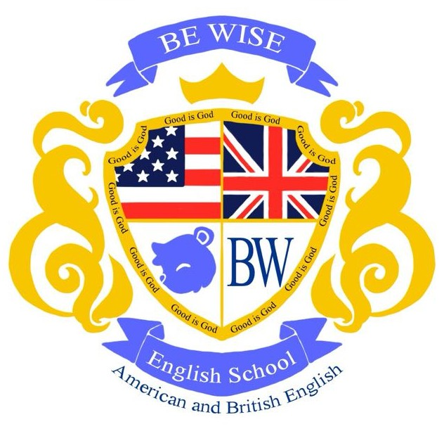

PLANEACIÓN ACADÉMICA CECAP
FORMATO DE PLANEACIÓN DIDÁCTICA

Curso: Computación Básica - Módulo: Excel Básico Aplicado
Código del curso: CB-EXL-001
1. DATOS DE IDENTIFICACIÓN
| Institución | Be Wise English School |
| Programa Educativo | Computación |
| Módulo/Curso | Excel Básico Aplicado |
| Periodo Académico | Por definir |
| Duración Total | Por definir |
| Frecuencia | Por definir |
| Horario | Por definir |
| Instructor | Jorge Eduardo Herrera García |
| Modalidad | Presencial |
| Requisitos de Ingreso | Conocimientos básicos de Windows y manejo de archivos |
| Perfil de Egreso | Usuario básico de Excel para tareas administrativas y personales |
2. COMPETENCIAS A DESARROLLAR
| Competencia Genérica | Competencia Específica | Indicadores de Desempeño |
|---|---|---|
| Manejo de herramientas digitales | Utilizar Excel para organizar información numérica y textual |
|
| Análisis de información | Aplicar operaciones matemáticas básicas mediante fórmulas |
|
| Representación gráfica de datos | Elaborar gráficos básicos para visualizar información |
|
3. ESTRUCTURA DE CONTENIDOS Y ACTIVIDADES
Sesión 1-2: Introducción a Excel (4 horas)
Semana 1
Temas: Interfaz de Excel, libro de trabajo, hojas, celdas, filas, columnas. Crear, guardar y cerrar archivos.
Actividades de Aprendizaje:
- Reconocimiento de elementos de la interfaz
- Práctica guiada: Crear un libro para gastos personales
- Ejercicio: Guardar archivo con nombre adecuado
Evidencia de Aprendizaje: Archivo "Mis_Gastos.xlsx" creado y guardado correctamente.
Materiales: Presentación PPT, archivo de ejemplo, computadora por alumno.
Sesión 3-4: Manejo de Datos (4 horas)
Semana 2
Temas: Introducción de datos, edición, copiar, cortar, pegar, autorrelleno, series.
Actividades de Aprendizaje:
- Llenado de tablas con datos de ejemplo
- Uso de autorrelleno para series de fechas y números
- Práctica de combinaciones de teclas (Ctrl+C, Ctrl+V)
Evidencia de Aprendizaje: Tabla completa con datos de inventario simple.
[Se agregarán las semanas restantes de ser correcto este formato]
4. ESTRATEGIAS DE EVALUACIÓN
| Instrumento de Evaluación | Descripción | Ponderación | Momento de Aplicación |
|---|---|---|---|
| Lista de cotejo | Verificación de habilidades prácticas en clase | 20% | Continua |
| Ejercicios prácticos | Resolución de problemas específicos | 30% | Cada sesión |
| Proyecto integrador (examen) | Aplicación completa de conocimientos | 40% | Fin de Módulo |
| Participación | Interacción en clase y resolución de dudas | 10% | Continua |
| TOTAL | 100% | ||
Criterios de Evaluación:
- Aprobación: 80% de asistencia y calificación mínima de 8.0
- Entrega de evidencias: En formato digital al final de cada módulo
- Recuperación: Una oportunidad de recuperación por módulo
5. RECURSOS DIDÁCTICOS
Recursos Materiales:
- Computadora con Excel 2016 o superior (1 por alumno)
- Proyector multimedia y pizarra
- Carpeta de archivos de práctica (digital)
- Guía rápida de comandos (impresa)
Recursos Digitales Recomendados:
- Plantillas oficiales de Microsoft Excel
6. OBSERVACIONES Y AJUSTES
Esta planeación podrá ajustarse según el ritmo de aprendizaje del grupo, manteniendo los objetivos y competencias establecidos.